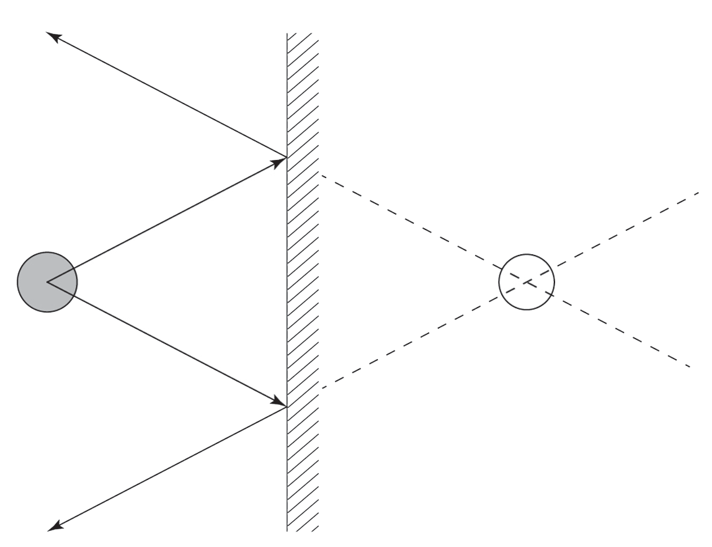

the fact that no light comes from that spot. The position of the image can be determined by drawing and extending the reflected rays behind the mirror until they intersect, as shown in Figure 4.16. In other words, the image seems to be the point from which all the reflected rays emerge. Moreover, the incident ray, reflected ray, and the normal all lie in the same plane.

Characteristics of images formed in a plane mirror
A plane mirror is a simple glass with a flat surface. The only difference from other types of glass is that its back has been silvered. The image formed by a plane mirror has several characteristics. These include the following:
1. The image formed is virtual (not real).
When an object is placed in front of the plane mirror, its image will appear to be in a position behind the mirror. This image is said to be virtual, that is not real, since it is in a location where the light does not reach, even though it appears like it does. It only appears to the observer as though the light is coming from this point.
2. The image is upright.
If you stand in front of a plane mirror, your image appears upright; that is, the image of your head appear at the top and that of your feet at the bottom. This is because plane mirrors form upright images, not inverted images.
3. The image is the same size as the object.
The image of an object placed in front of a plane mirror is the same size as the object. The ratio of the image size to the object size is called magnification. Plane mirrors produce images which have a magnification of 1.
4. The image is the same distance behind the mirror as the object is in front of the mirror.
If you stand a distance of three metres from the plane mirror you must focus at a location three metres behind the mirror to view your image.
5. The image has a left-right reversal.
If you view your image in a plane mirror, you will notice that it appears to be laterally inverted. This means that when, for example, you raise your left hand, the image appears to indicate a raised right hand. If you are wearing a shirt with lettering, for example, WAY, it would appear as YAW. Note that